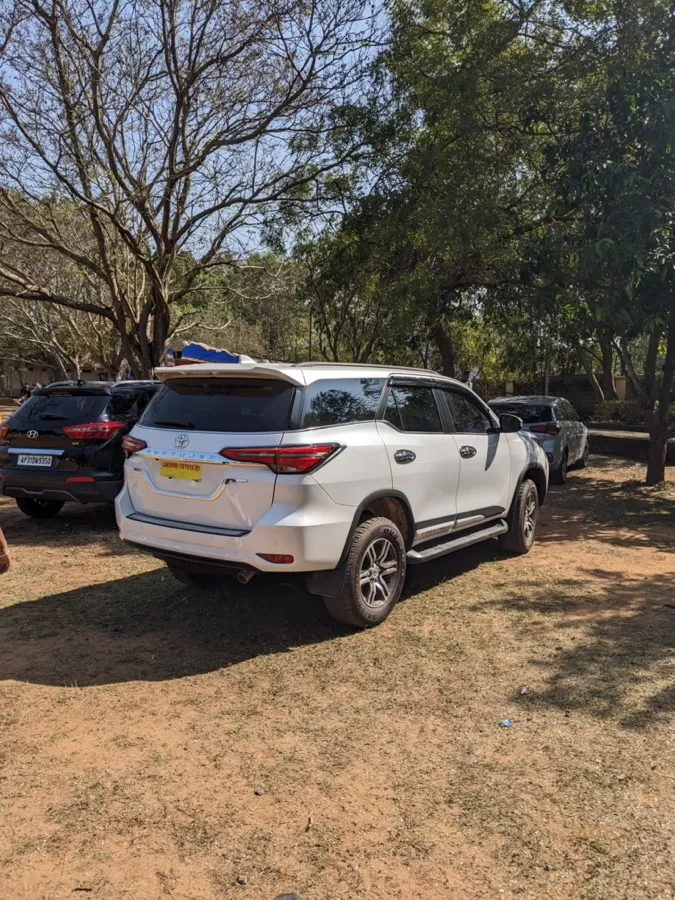
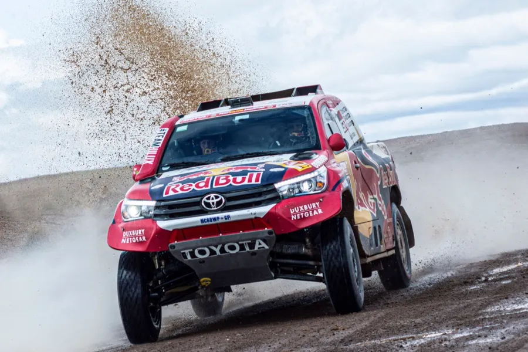
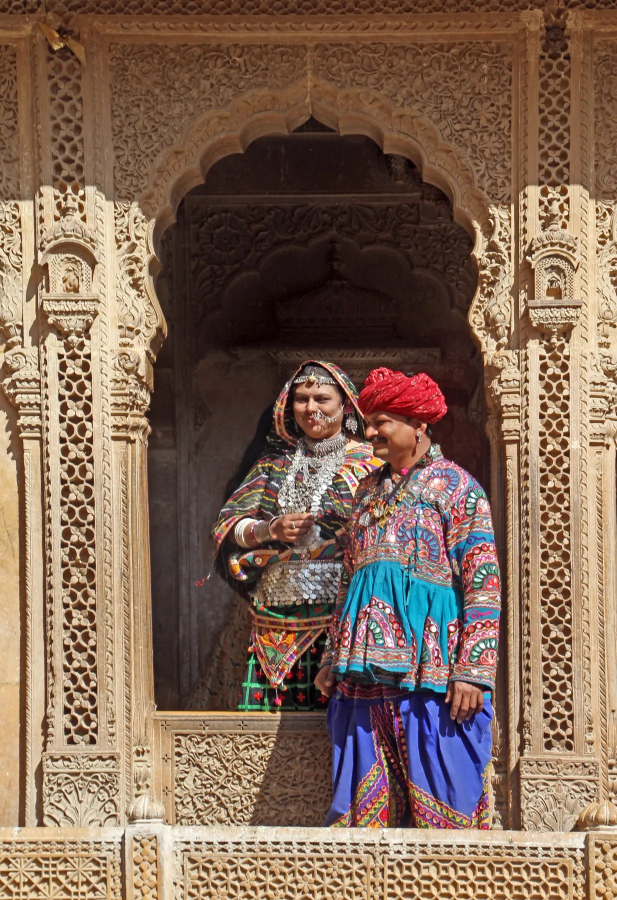
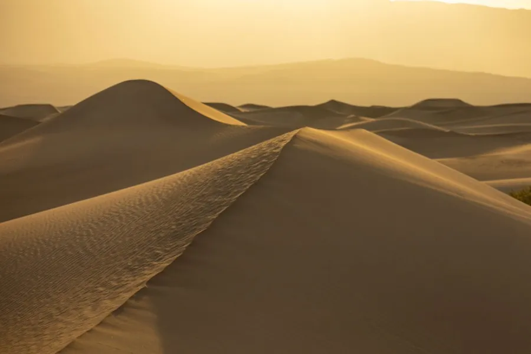
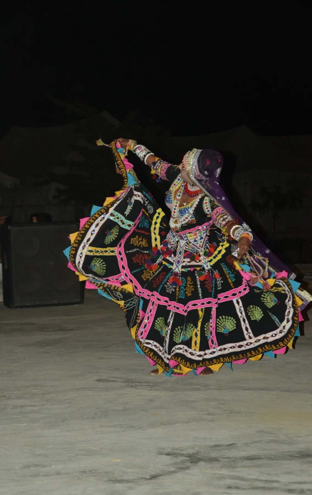
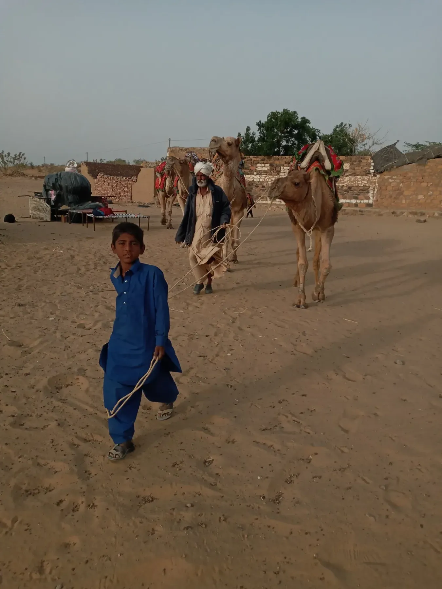
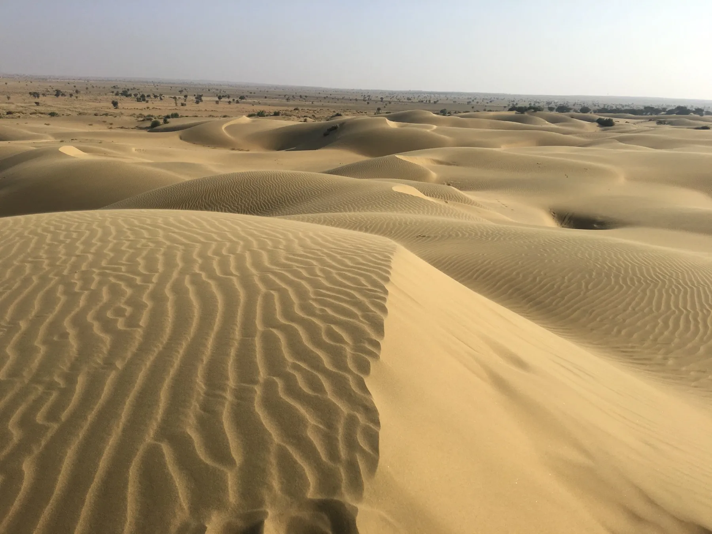
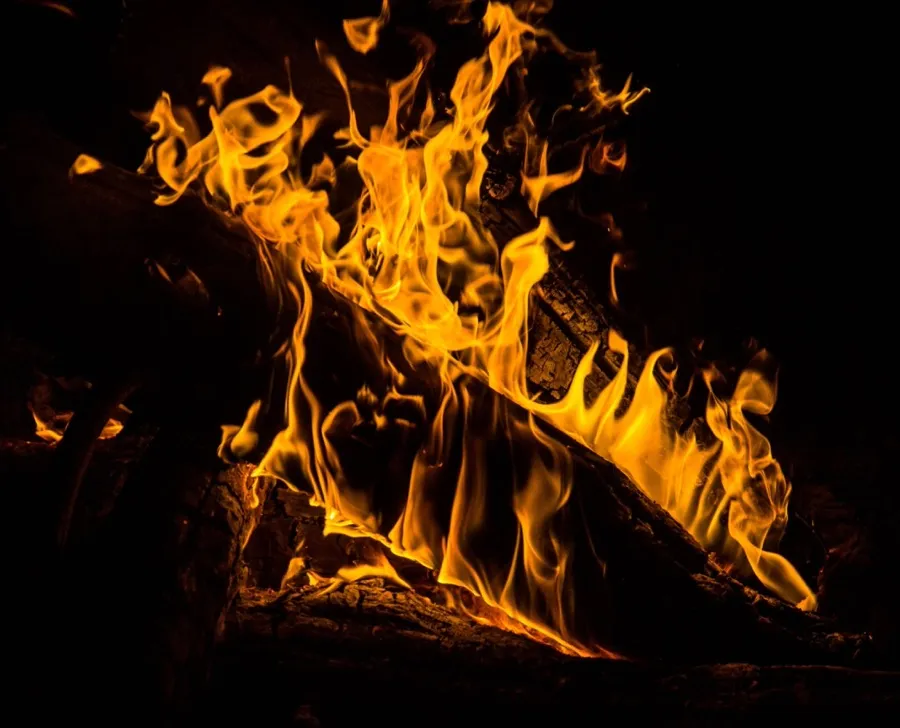

Day One
Golden Fort & Local Sightseeing
Night in a city hotel
See the Full DayA route through the desert
Fort ramparts at dusk, havelis carved from honey-coloured stone, a vanished village, and a night of folk drums under the dunes at Sam.
Begin the JourneyThe Trip
A 2-night, 3-day Jaisalmer trip is built for exploring the fort and its havelis, a desert safari at sunset, and one night at a camp among the Sam dunes with Rajasthani folk music and dance — then home the next morning with the whole desert still in your eyes.
Day One
Night in a city hotel
See the Full DayDay Two
Night in a desert camp
See the Full DayDay Three
Return home
See the Full DayDay One
Arrive, settle in, and walk straight into a living fort — then spend the afternoon among havelis carved like lace from sandstone.
Freshen up and have breakfast or lunch, depending on when you land.
One of the few living forts in the world. Wander the narrow lanes, step into the Jain temples, and browse local handicraft shops tucked into the walls.
A Rajasthani thali, or whatever local kitchen is open nearby.
Five havelis in one cluster — stop to take in the sandstone detailing; it rewards slowness.
Two more mansions, each with its own carved personality.
Time it for sunset if you can — the ghats catch the light well.
A rooftop restaurant looking out at the illuminated fort.
Day Two
Royal cenotaphs, a village that emptied overnight centuries ago, then the long gold run out to the dunes.
Royal cenotaphs set against open sky — good light for photographs this early.
A historic settlement left deserted overnight, centuries ago. Explore the ruins and the story that still surrounds them.
Eat before the road — the dunes are a fair drive out.
Settle into your tent before the afternoon heat breaks.
Ride the dunes into sunset. Safari timing shifts with the camp and the season — confirm on arrival.
Rajasthani drums and the swirling Kalbelia dance around the fire.
A traditional buffet under open sky.
Day Three
One last quiet hour on the dunes before the drive back to the city, with time to carry a little of Jaisalmer home.
The desert at its most still — worth the early alarm.
Before the sun climbs and the sand starts to warm.
Back toward Jaisalmer proper.
Handicrafts, leather goods, mirror-work textiles — depending on your departure window.
Three Ways to Sleep
Every route through Jaisalmer passes through one, two, or all three of these — a city hotel, a family homestay, or a tent out on the dunes. Each gives you a different version of the same desert.
Hotel
A proper bed, air conditioning, and hot water after a day on your feet in the fort — the practical base for your city night.
Homestay
Stay with a local family on the edge of the city — home-cooked Rajasthani meals, slower mornings, and a version of Jaisalmer that doesn't show up in a brochure.
Camp
A tent pitched where the sand runs out to the horizon — fire, folk music, and more stars than you've seen in a while.
Make It Yours
Trade the standard package for a more private, more comfortable version of the same route — a better vehicle, a fort-view room, or a dune camp with no one else on it.

Vehicle
Swap the standard jeep for a Toyota Fortuner for the drive to Sam and back — more room, more comfort on the longer stretches.

Vehicle
A Toyota Hilux for the desert run, built for the dunes and the open road alike.
Vehicle
The classic open-top jeep safari through the dunes — closer to the sand, more wind in your hair.

Stay
Rooms inside the fort itself, with sunrise and sunset views over the ramparts and the city below — a different night entirely from a standard city hotel.

Desert
Your own stretch of dune, away from the shared safari routes — just your group, the sand, and the sky.

Desert
Folk music and Kalbelia dance performed for your group alone, rather than shared with the rest of the camp.

Safari
A full hour on camelback through the dunes, timed around the light for the best photographs.

Stay
Stay out at a private dune camp with breakfast, lunch, and dinner served in the rural desert, under open sky, away from the main camps.

Evening
An evening bonfire with beverages available, including liquor, for those who want to make a night of it under the stars.
Upgrades are arranged separately from the standard package — ask your operator about availability and pricing.
Before You Book
Safari timings vary by camp and season — confirm on arrival.